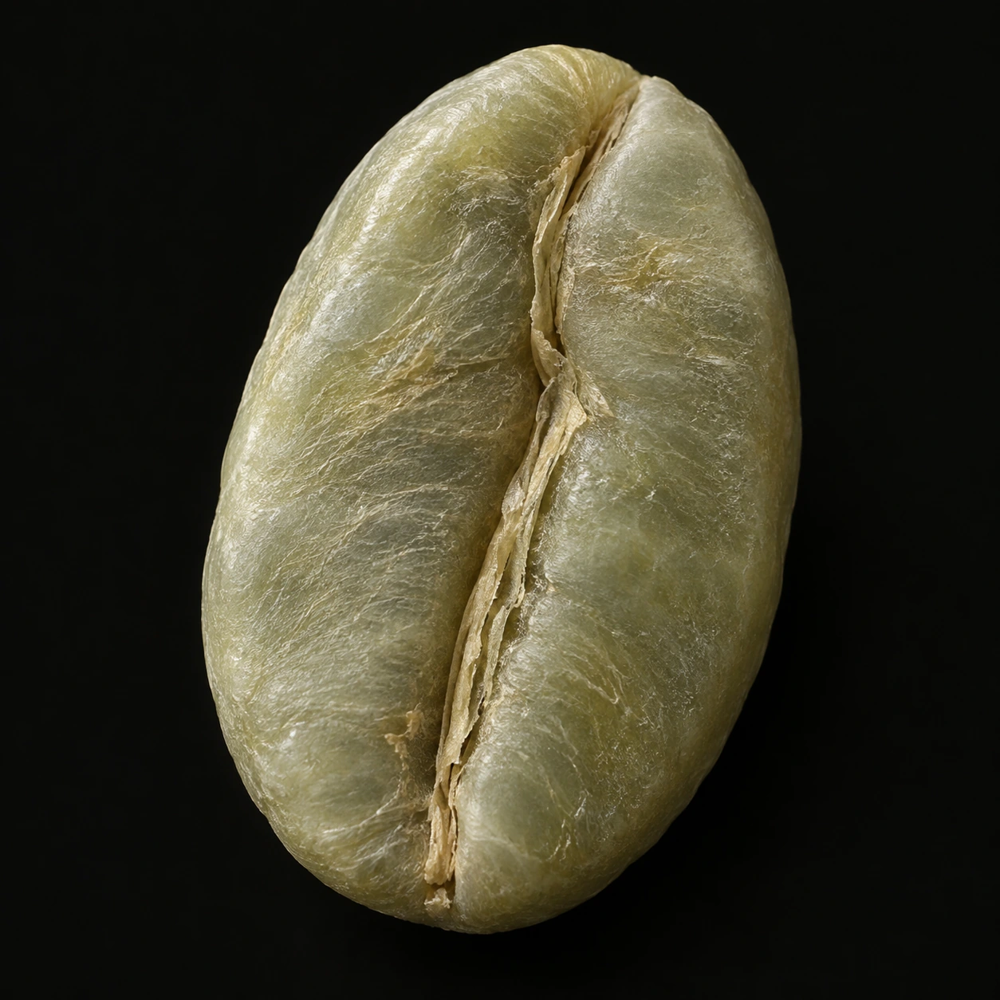

05烘焙 / A CHANGE BY HEAT
生成物件 · 视觉示意热，改写
一粒豆。
它停留在生豆里的日子结束了。
这一次，颜色、表面与气味一起改变。
01 / 生豆
变化开始以前。
灰绿色的表面，紧实的种子。熟悉的烘焙香气，还没有在这里出现。



生豆熟豆
慢慢拖动，或选择一处停留。画面为艺术关键帧过渡，不对应实际温度与时间。
它停留在生豆里的日子结束了。
这一次，颜色、表面与气味一起改变。
灰绿色的表面，紧实的种子。熟悉的烘焙香气，还没有在这里出现。

慢慢拖动，或选择一处停留。画面为艺术关键帧过渡，不对应实际温度与时间。